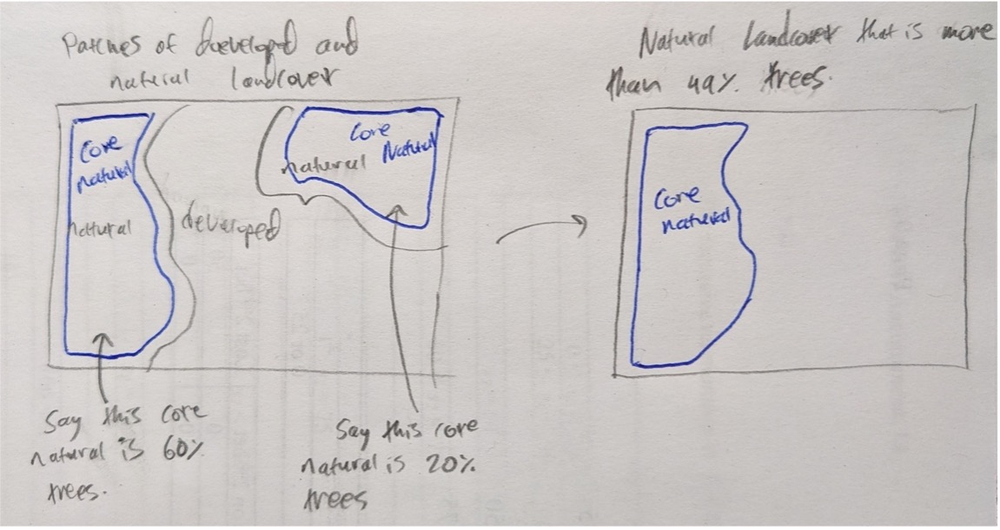
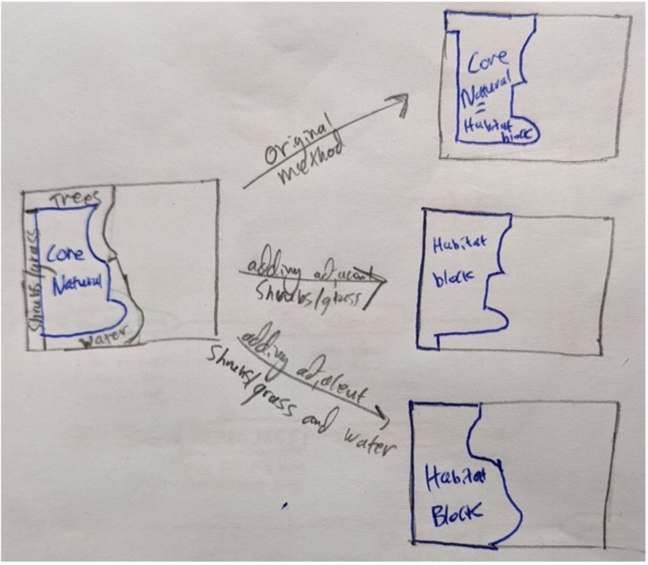
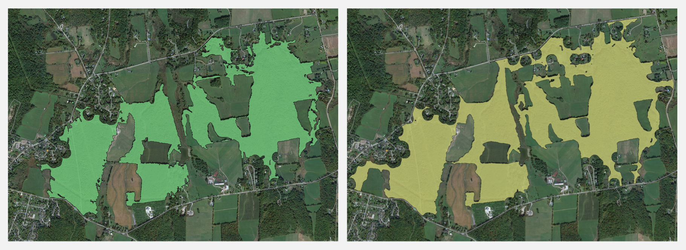
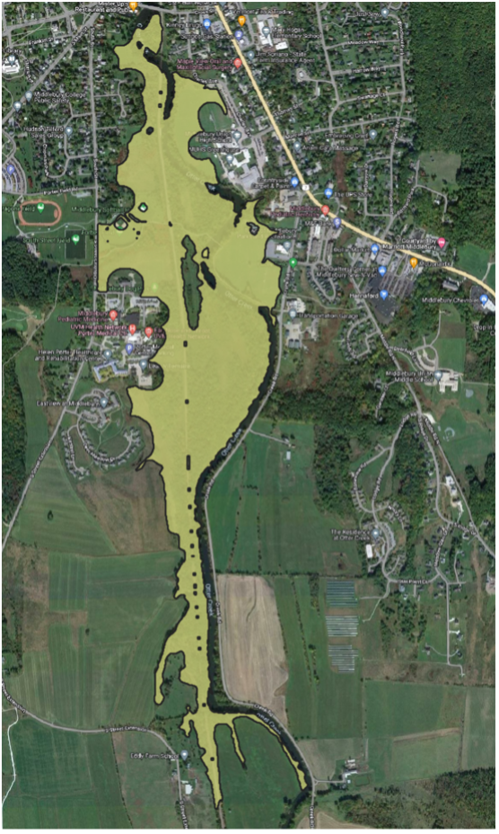
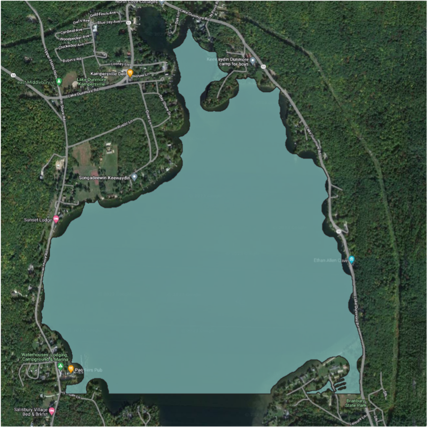
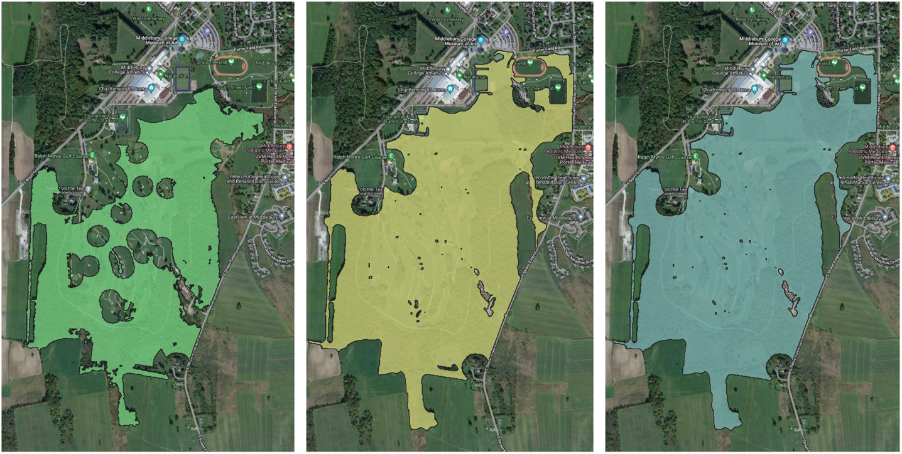

Introduction
When planning for conservation, accurately representing habitat blocks is crucial. The size, shape, location, composition, and connectedness of habitat blocks all provide valuable information regarding the ways that flora and fauna use the space, and the way that we account for these factors impacts the conservation decisions we might make. In this report, I evaluate the options available for one facet of identifying habitat blocks: whether adjacent shrubs/grasses and water should be included as part of a habitat block.
I begin by explaining relevant background information and framing my research, before providing details on my methodology and results. After that, I interpret the results, provide recommendations based on my results, and conclude with current shortcomings and directions for future work.
Background
Vermont Act 171, enacted in 2016, amended Vermont’s planning statutes to encourage the preservation of forests and biodiversity by local municipalities. Specifically, Act 171 highlights the importance of habitat blocks and connectors and provides guidance as to how municipalities in Vermont should consider them in their planning efforts. In this manner, Act 171 defines how municipalities in Vermont, such as the Town of Middlebury, plan for conservation.
Some key terms for this discussion include:
- Forest block: The state defines a forest block as “a contiguous area of forest in any stage of succession and not currently developed for non-forest use” (VT ANR, 2018). Much of Vermont’s biodiversity comes from forest blocks, so protecting discrete regions of forest is important for the protection of native flora and fauna.
- Habitat block: According to Vermont’s BioFinder 3.0 Development Report, habitat blocks are regions of “contiguous forest and other natural habitats that are unfragmented by roads, development, or agriculture”(VT ANR Biofinder/VCD Team, 2019). A forest block would qualify as one or part of one habitat block, but the term habitat block also describes other types of important habitat such as wetlands and grasslands.
- Habitat connector: Also known as wildlife corridors, habitat connectors are the undeveloped land and water that link habitat blocks, allowing plants and animals to move between habitat blocks throughout the landscape (VT ANR, 2018).
Habitat blocks and connectors provide numerous and varied benefits to Vermonters. For example, research shows that healthy forests contribute to cleaner water and air, which have important public health implications for people living in the area (VT ANR, 2018). Additionally, the forestry industry contributes $1.4 billion annually to Vermont’s economy, and forest-based recreation and tourism contributes both financially and culturally to the welfare of Vermont (VT ANR, 2018). Finally, habitat blocks and connectors also contribute to floodwater mitigation and carbon sequestration (VT ANR, 2018).
Of course, habitat blocks and connectors have value not only for what they provide for Vermonters, but also for what they provide for other species. One important consideration for animals is the extent to which habitat blocks are connected to one another. Many species need to travel between different habitats throughout the year, so ensuring that habitat blocks are sufficiently connected is vital for their welfare. The ultimate goal of habitat planning is to connect all habitat blocks, so as to produce a landscape with a single and vast habitat block.
Research Framework
In this analysis, I begin with a script developed by Professor Howarth that identifies habitat blocks in Middlebury. I then modify his script to include (1) adjacent shrubs/grasses and (2) adjacent shrubs/grasses and water. With new results in hand, I assess how these changes affect the habitat blocks and their connectivity. The entire analysis is conducted in Python using Whitebox Tools. The analysis is guided by the following questions:
- How does including adjacent bordering grass, shrubs and water affect what the model considers to be a habitat block in Middlebury?
- How do these changes affect the connectivity of the habitat blocks?
Because I attach adjacent grasses/shrubs and water to preexisting blocks, the habitat blocks should expand slightly under my analysis. Furthermore, because adjacent natural cover could stretch from one habitat block to another, I anticipate that the addition of adjacent shrubs/grasses will connect some blocks that were separate under the original methodology, and the subsequent addition of adjacent water features will connect even more blocks. In this manner, using the revised model for future conservation work would make it appear that we are closer to the ideal fully connected habitat model.
Methods
As mentioned earlier, my objective is to produce two revised habitat blocks layers in Middlebury, and asses how their habitat blocks and connectivity differs from the original layer. The first revised layer pulls adjacent grasses/shrubs into the habitat blocks and the second revised layer pulls both adjacent grasses/shrubs and water into the habitat blocks.
Per Professor Howarth’s methodology, the only input into the model is a 1-meter resolution land cover dataset provided by Professor Howarth. In the landcover dataset, each 1 meter by 1 meter pixel of land is labelled with a number that represents its current landcover, distinguishing between tree cover, shrubs/grasses, water, bare soil, agriculture, and several other classes of land-use. This dataset is a great choice for our purposes because it provides detailed, spatially accurate information about current land-use in Middlebury.
To generate the habitat blocks, the model first identifies places that have natural landcover (trees, grass/shrubs, and water) and places that have been developed (all other landcover classes). Then, the model identifies “core natural” areas by looking 50 meters within any contiguous area of natural landcover. This eliminates any tiny areas of natural landcover from consideration. After that, the model selects core natural areas for which more than 49% of their land area is tree cover. These steps were employed in all 3 iterations of the model and are illustrated in the diagram below (Figure 1).

The next step is where my models differ from Professor Howarth’s original methodology. The original model brought adjacent forest cover back into the core natural areas and defined those as habitat blocks. Instead, one new methodology pulls adjacent forest cover and adjacent shrubs into the habitat blocks. The other new methodology pulls adjacent trees, shrubs, and water all into the habitat blocks. This is illustrated in the diagram below (Figure 2).

Finally, all models determine the land area of each habitat block and select only those which are over 100 acres in area. My scripts are available at the following links:
Results
After running my scripts, I found that the number of habitat blocks fell by over half between the original results and the results after filling in adjacent shrubs. However, the number of habitat blocks did not decrease further after filling in adjacent water. To illustrate how the number of habitat blocks changes under the different methodologies, I created the following bar chart (Figure 3).

To further explain the patterns in Figure 3 and illustrate how the different methodologies changed what we consider to be a habitat block, I also created the following close-up maps of habitat blocks. Please note that in the following figures, there may be additional habitat blocks within the map area; I display only the blocks required to illustrate particular patterns.





Discussion
In some ways, these results align with our expectations and in some ways, they differ. First of all, we expected to extend the boundaries of our preexisting blocks because we included adjacent shrubs and water, and this held true. For example, see the habitat block in Figure 8. On the left, we have our initial habitat block. In the middle, we have clearly filled in a number of holes in the middle of the block that are classified as grass/shrubs under the landcover dataset. And on the right, we have filled in a few ponds – for an example, look at the south-east corner of the block. However, Figure 8 is also indicative of one of our model’s errors. The so-called “habitat block” displayed in Figure 8 is actually a golf course! While parts of this habitat block are tree canopy, a large portion of it is regularly mowed for golfing purposes. Our model included this as a habitat block because the landcover dataset classified most of the golf course as grassland/shrubs. This issue could be addressed by changing the landcover labelling of the golf course to a different class and re-running the analysis, but this example is indicative of the fact that our current model is far from perfect.
When it comes to the question of connectivity, Figure 3 clearly illustrates my results. As expected, the number of habitat blocks drops dramatically – from 147 to 70 – after filling in adjacent grasses/shrubs (Figure 3). This is due to scenarios such as the one shown in Figure 4, where bands of shrubs and trees provide connections between preexisting habitat blocks (Figure 4). There are also some cases, such as the one illustrated in Figure 6, where filling in adjacent shrubs makes the land area of a habitat block grow to more than the 100-acre area criterion, creating additional habitat blocks (Figure 6). But because the number of clumps drops by 77 between the original and shrub-inclusive methodology, the number of blocks connected by filling in adjacent shrubs clearly is far greater than the number of new blocks created.
We also anticipated that the number of habitat block clumps would decrease between the shrub-inclusive and water-inclusive methodology, because water may connect habitat blocks. However, the number of habitat blocks in Middlebury is actually equal under the two analyses (Figure 3). While this may initially be surprising, careful evaluation of the habitat blocks produced by the methodologies reveals the cause. There were some instances, such as the example illustrated in Figure 5, where filling in adjacent water connected habitat blocks (Figure 5). However, there were an equal number of cases, such as the one illustrated in Figure 7, where filling in adjacent water allowed for a new area of core natural area to meet the required 100-acre threshold to be considered a habitat block. Thus, while the addition of water in the model does increase the connectivity of the blocks that were previously part of the model, it also creates new blocks, raising the statistic reported in my graph (Figure 3).
The new block displayed in Figure 7 is almost exclusively Lake Dunmore and the region connecting the two previous blocks in Figure 5 is largely Otter Creek. It is worth asking whether these should really be considered habitat. While they certainly provide habitat for aquatic animals and some benefits for land animals, they do not really provide habitat for land animals. It may make sense to include water when considering all animal habitats, but if restricted to forest habitat blocks like Act 171 discusses then this would not suffice.
Recommendations
My results indicate that the inclusion of adjacent grasses/shrubs dramatically improves the connectivity of Middlebury’s habitat blocks. Since our goal is to maximize the connectivity of habitat blocks in Middlebury, perhaps we ought to focus on improving these shrubland connectors by formally protecting them and potentially reforesting them.
Conclusion
Overall, I found that pulling in adjacent shrubs/grasses dramatically increases the connectivity of habitat blocks, while pulling in adjacent water does less to improve connectivity. Furthermore, both the incorporation of adjacent shrubs/grasses and the incorporation of water creates additional habitat blocks that should at least be evaluated by planners.
While I would love to be able to suggest one of the three models as the “best” model, I cannot say that one is unilaterally better than the others. Rather, one’s intended purpose ought to determine their choice of habitat block layer. Act 171 emphasizes the importance of forested habitat blocks in particular – if one’s focus is strictly on forest habitats, they should opt for the original or shrub-inclusive option. If one seeks to identify habitat blocks of any type, then including water might make sense. Other purposes, such as modeling the habitat of aquatic animals in particular, might require different models altogether.
As we have seen, the current work is imperfect. For example, all three methodologies classify the golf course as a habitat block. Future work could modify our landcover dataset to make our results more meaningful. Additionally, while this report presents an approach for identifying habitat blocks and priority lands to improve connectivity, it does nothing to cross-reference these habitats and connectors with currently conserved areas. Future work should identify which of these areas are and are not conserved in order to determine particular locations to target for future conservation easements.
References
- VT ANR. (2018). Act 171 Guidance. https://anr.vermont.gov/sites/anr/files/co/planning/documents/guidance/Act171Guidance.pdf
- VT ANR Biofinder/VCD Team. (2019). BioFinder 3.0 Development Report. https://drive.google.com/file/d/1eiLfinDcBmC4skrvpNl3RVbkdLxSHzfj/view